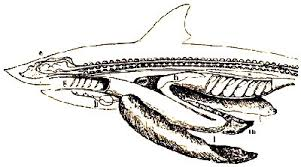
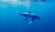
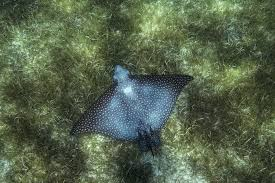
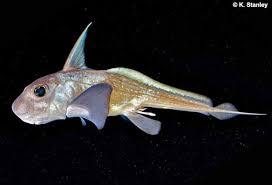

Introducción
Los seláceos, un grupo de peces cartilaginosos que incluye a tiburones, rayas y quimeras, son auténticos reyes de los océanos. Su reinado se extiende a lo largo de millones de años, gracias a una serie de adaptaciones que les permiten dominar los mares.
Anatomía y Fisiología de un Depredador Perfecto
- Esqueleto Cartilaginoso: Su esqueleto, compuesto principalmente de cartílago, les confiere una mayor flexibilidad y ligereza, lo que les permite realizar movimientos ágiles y rápidos. Esta característica, junto con su forma hidrodinámica, los convierte en nadadores excepcionales.
- Piel Dentada: La piel de los seláceos está cubierta de dentículos dérmicos, pequeñas escamas en forma de diente que, además de protegerlos, reducen la fricción al nadar y les brindan un camuflaje eficaz.
- Branquias: Respiran a través de hendiduras branquiales ubicadas a los lados de la cabeza, lo que les permite extraer el oxígeno disuelto en el agua de manera eficiente.
- Ampolla de Lorenzini: Este órgano sensorial único les permite detectar campos eléctricos débiles, lo que les facilita localizar presas enterradas en la arena, orientarse en aguas turbias y detectar cambios en la salinidad del agua.
- Hígado Graso: El hígado de los seláceos es grande y rico en lípidos, lo que les proporciona flotabilidad y sirve como reserva de energía. Además, este órgano produce sustancias que ayudan a regular la flotabilidad y la densidad del cuerpo.
Diversidad de Formas y Hábitos
La clase Selachii abarca una amplia variedad de especies, cada una adaptada a un nicho ecológico específico.
Tiburones
Desde los pequeños tiburones gato hasta los gigantescos tiburones blancos, estos depredadores ápice ocupan una posición dominante en la cadena trófica marina. Su dieta es variada y puede incluir peces, mamíferos marinos, crustáceos y moluscos. ¿Quieres conocer más sobre los tiburones?
Rayas
Con su cuerpo aplanado y aletas pectorales amplias, las rayas son excelentes nadadoras y cazadoras. Muchas especies se alimentan de moluscos y crustáceos que encuentran enterrados en el fondo marino. ¿Quieres conocer más sobre las rayas?
Quimeras
Estas extrañas criaturas, a menudo denominadas "peces fantasma", habitan en las profundidades marinas y se alimentan de invertebrados bentónicos.
Adaptaciones para la Supervivencia
- Sistema Sensorial Perfeccionado: Además de la ampolla de Lorenzini, los seláceos poseen una línea lateral que detecta vibraciones y movimientos en el agua, lo que les permite percibir a sus presas y a los depredadores a distancia.
- Dientes Continuamente Reemplazables: Sus dientes se renuevan constantemente, lo que les garantiza siempre una dentadura afilada para capturar y procesar sus presas.
- Reproducción: Los seláceos presentan una gran diversidad de estrategias reproductivas, que incluyen la ovoviviparidad (los huevos se desarrollan dentro del cuerpo de la madre), la viviparidad (los embriones se desarrollan dentro de la madre y reciben nutrientes a través de una placenta) y la oviparidad (ponen huevos).
Amenazas y Conservación
A pesar de su éxito evolutivo, muchas especies de seláceos se encuentran amenazadas por la sobrepesca, la pérdida de hábitat y la captura incidental. La conservación de estos animales es fundamental para mantener el equilibrio de los ecosistemas marinos.